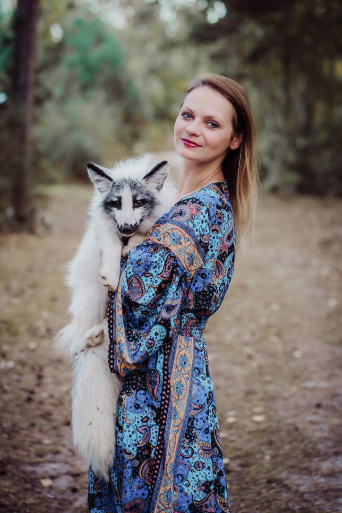

Telefon: 608 867 830
Email: TanaGrisova@gmail.com
Linkedin: Teťana Grisová
O mně
Vítejte na mém prvním webu, psát weby se teprve učím. Myslím si, že je přede mnou dlouhá cesta.
Jmenuji se Teťana Grisová. V současné chvíli pracují jako Product Owner SAP Success Factors.
Mým velkým koníčkem je čtení a cestování.
Vzdělání
ČESKÉ VYSOKÉ UČENÍ TECHNICKÉ V PRAZE
Fakulta dopravní 2012 – 2018
Inženýrský obor – "Logistika v dopravě"
Diplomová práce „Logistické zajištění kvality balení dodávek při přepravě do Indie – Škoda Auto“
Pracovní zkušenosti
ŠKODA AUTO ČESKÁ REPUBLIKA
Nábor a Employer Branding: Product owner SAP SF Modul Onboarding
9.2023 - Doposud
- Vyhodnocení rizik, příprava budoucích scénářů a návrh řešení
- Kontinuální zlepšování procesů a funkcí modulu, elektronizace postupů
- Testování projektu Hello Success
- Testování releasu v SAP Success Factor Kompas
- Práce v JIRA
|
ŠKODA AUTO ČESKÁ REPUBLIKA
Nábor a Employer Branding: Product owner SAP SF Modul Onboarding
8.2022 - 8.2023
- Vyhodnocení rizik, příprava budoucích scénářů a návrh řešení
- Kontinuální zlepšování procesů a funkcí modulu, elektronizace postupů a další rozvoj systému
- Testování projektu Hello Success
- Testování releasu v SAP Success Factor Kompas
- Práce v JIRA
|
ŠKODA AUTO ČESKÁ REPUBLIKA
Nábor a Employer Branding: Product owner SAP SF Modul Onboarding
10.2020 – 7.2022
- Aktivní oslovení kandidátů technické pozice a dělnické pozice
- HR proces v SAP Success Factors
- Kariérní poradenství pro současné zahraniční zaměstnance
- Hledání talentů mezi zahraničními zaměstnanci
- Projekt Ukrajina od 2.2022 - 7.2022
|
ŠKODA AUTO ČESKÁ REPUBLIKA
Specialista Postupů a Reklamaci
9.2017 – 11.2018
- Komunikace se zahraničním závodem v Rusku
- Spolupráce s jinými odděleními (kvalita, provoz, balení, atd.)
- KAnalýza problémů a návrh řešení
- Péče o reklamační sklad
|
Certifikáty a školení
- Plog. – Certifikát provozní logistik
- Projektová licence Škoda Auto
- Agilní řízení
- User Experience
- JIRA - vedení projektu
- JIRA - Big picture
- SUHR - Behaviorální pohovory
- SUHR - Akademie
Zahraniční pobyty
- 5.2016 – 9.2016 - Work and travel USA
Jazyky
- Angličtina – B2
- Ukrajinština – C2
- Ruština – C2
- Čeština - C2